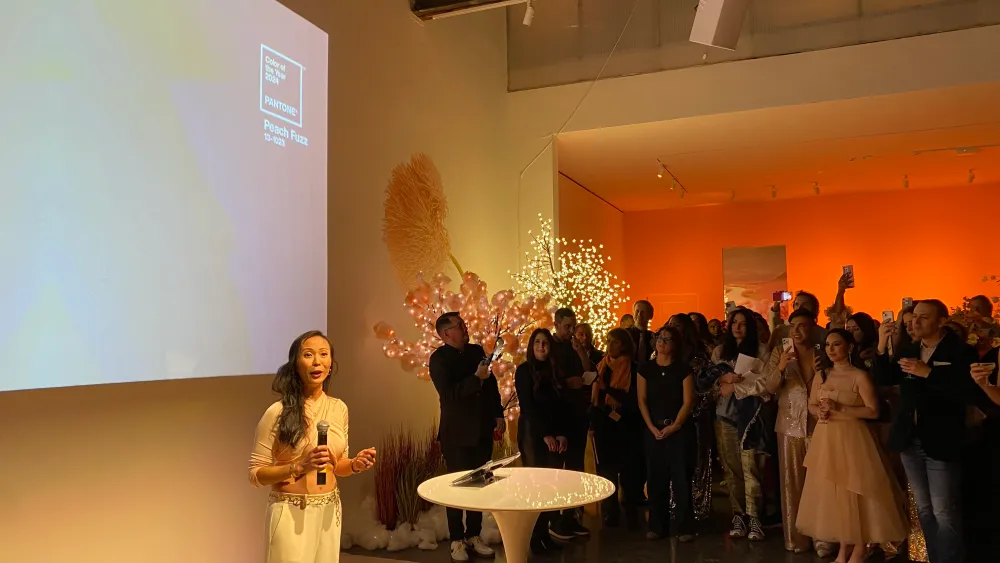

Pantone a récemment dévoilé "Peach Fuzz" comme la couleur de l'année
2024, caractérisée par une teinte chaleureuse et réconfortante.
L'article met en lumière l'excitation qui entoure chaque annonce de
Pantone, soulignant l'importance de la couleur dans le monde du
design. "Peach Fuzz", décrit comme une nuance apaisante, marque le 25e
anniversaire du programme Pantone "Color of the Year".
L'article offre un aperçu de l'événement de lancement de la couleur,
soulignant l'ambiance captivante imprégnée de sophistication et de
chaleur. Des détails sur la soirée, où la teinte était omniprésente,
donnent un aperçu de la manière dont les influences de cette dernière
peuvent transcender la simple palette de couleurs pour inspirer des
expériences sensorielles.
Les commentaires des responsables de Pantone, Elley Cheng et Laurie
Pressman, mettent en avant l'intention derrière le choix de cette
couleur. Elle incarne la chaleur, la réconfort, la compassion et
l'empathie, s'alignant avec le besoin perçu d'une connexion humaine
sincère et positive. Les responsables encouragent son utilisation
comme un moyen de véhiculer des émotions positives à travers le
design. 
1. Elley Cheng, Présidente de l'institut de couleur Pantone
Enfin, l'article révèle les partenaires officiels de Pantone pour
2024, tels que Motorola, Shades by Shan, Ruggable, Ultrafabrics, et
Spoonflower. Cette collaboration offre aux infographistes une
opportunité de participer à des projets variés, allant des appareils
technologiques aux produits textiles, tous inspirés par la couleur de
l'année.
{kind=link}